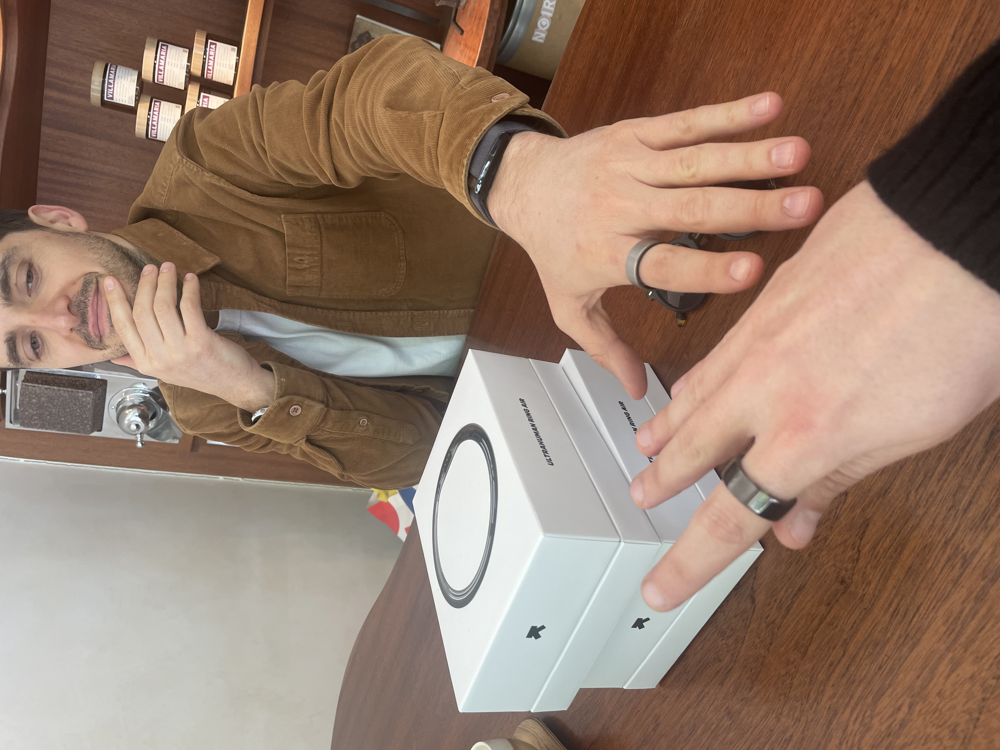
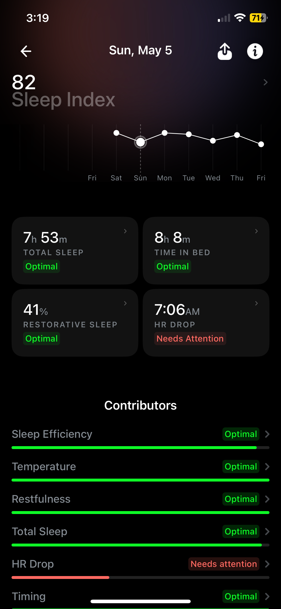
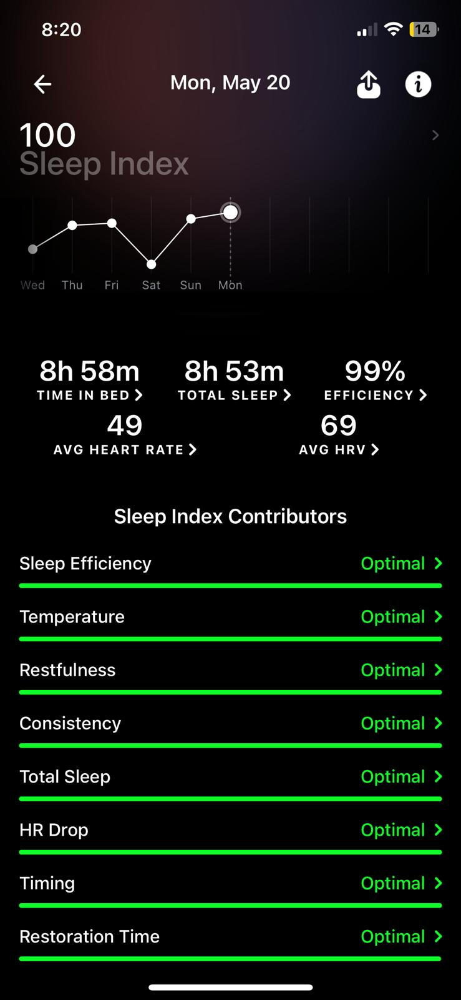

It's been 12 months since I've been in in-depth mode to improve my sleep quality. I've tracked various experiments, from eating super early to using supplements. Now, I'm going to share what I've learned about my sleep.
A great night's sleep rejuvenates the body, boosts brain function, powers the immune system, and regulates hormones, forming the foundation for well-being and longevity.
Sleep deprivation, on the other hand, impairs us. Being awake for 18 or 24 hours is like having a blood alcohol content of 0.05% or 0.1%. If you only do one thing for your health: sleep.
And how can you ensure you are on the right path with sleep? By tracking.
You can only improve what you measure. Sleep data reveals what's working, what impacts your sleep, and what makes your sleep better.
Multiple options exist for sleep tracking:
- Smartwatch (e.g., Garmin, Apple Watch)
- Band (e.g., Whoop)
- Ring (e.g., Ultrahuman, Oura)
- Journal
Back then, I started off tracking my sleep with a Garmin Forerunner 245 but quickly noticed that this wearable was not designed for sleep tracking. It only provides sleep duration, which is most of the time inaccurate, and not enough to make any improvements.
But recently we got a ring with Max B and it has made my sleep quality tracking much more accurate and easier.

It's been more than 3 months since I started using the Ultrahuman Ring Air.
I began with a quite normal baseline. I'm a very sound sleeper by nature; I fall asleep easily and normally sleep through the night.
Here's where I started:
- 82 sleep score
- 7h 53min total sleep
- HRV 70 ms
- HR drop: 37
- Skin Temperature: 94.28
- Deep Sleep: 1h 8m
After establishing my baseline, I trained to become a "sleep athlete."
For the various experiments, I took inspiration from Bryan Johnson's Blueprint and members of the Zero Club.
Though, I was limited in making lifestyle changes since I had to maintain my social life (going out with friends, eating at restaurants).
I learned about my sleep a bit more each day by reading and analyzing the app's data.
It took me 15 days to reach a 100% sleep index score for the first time.


Now, I try to stick to that score, but I have to be honest, it's hard.
So, my goal is to consistently stay above a 90 Sleep Score.
Sleep Protocols
So I came up with a sleep protocol that allows anyone to implement in a flexible and practical way—there's no need to make it more complicated than that.
Here are the 7 things I've implemented in my routine:
Coffee
I reduced my intake from 3 cups of coffee to 1 cup. I also continue to take the Active100 longevity drink daily, which contains about 11 mg of caffeine. As a coffee lover, I've switched to decaf for my second cup of the day.
Exercise
- I stick with at least 11K steps per day
- Strive to be consistent with workouts every day.
Supplements
- Magnesium: Magnesium is essential for sleep. Include magnesium-rich foods in my diet or take a magnesium supplement.
- I take 250 mg of Magnesium
- Glycine, 2g/day
- Apigenin, 30mg/day
Food
- I reduced my caloric intake to 500 kcal for the last meal. I eat either an Orange Fennel Salad or a Stuffed Sweet Potato from Bryan Johnson's Blueprint.
- I have my last meal at 6 or 7 PM. It's even better if you can eat earlier.
- No protein in my last meals.
- No food 3 hrs before bed.
Sleep environment
- I try to keep the temperature as low as possible. The best bedroom temperature is between 60–67°F (15–19°C). This is very challenging during summer in Paris, so A/C is mandatory.
- I keep my room cool and dark while sleeping.
- I use earplugs, as living in Paris can be noisy at times.
Fun fact: I found out that the parameter that has the most impact on the score is the skin temperature.
Time to bed
- Regularity is key.
- I go to bed at the same time (+/-30 min).
- Scheduled at 10:30 PM.
Bedtime routine
1/2 hour before bed, I wind down by avoiding screen time, reading, or doing meditation.
Ring review after 3 months of use
Now that you have the sleep protocol, you might be wondering if you should buy the ring I am using.
So, I have prepared this pro and con format so you can make your own choice.
- The ring is comfortable to wear, perfect for sleeping with. I like the look and have received great feedback about its appearance. There are different color options too.
- The app is well-designed. It's very simple to read the data through the app and get insights from them. Hats off to the team for their work.
- Notifications are not too overwhelming nor too frequent. I like receiving my notifications that tell me my caffeine window is open.
- Weekly reports are helpful and provide enough insights to help me move in the right direction.
- As far as measurements go, the ring and Whoop show very close numbers for resting heart rate and HRV. They are usually the same, and if not, only one or two digits off.
- Battery life: In our time with the device, I consistently managed up to five days of usage.
- I cannot forget the customer support's effort and politeness when it comes to solving its users' problems.
- One-time purchase. Not a subscription like Oura Ring.
- Exercises are not recognized in the app, so you cannot track workouts.
- Sometimes at the gym, I need to remove the ring when I exercise with dumbbells or even for pull-ups.
- Ring Air only measures blood oxygen saturation (SpO2) during sleep sessions, and we would like to have the option to manually measure this metric like we can on smartwatches.
Ultrahuman Ring Air is sleek, it's a great tool for logging sleep data without the bulk of a smartwatch, and you get generally useful analysis and ways to improve your sleep. Heart Rate tracking is comparable to that of a regular smartwatch thanks to the optical PPG sensor.
There's a great companion app that covers movement, sleep, and recovery which actively pushes you to improve your scores in each area.
Ultrahuman Ring Air is a viable alternative to the Oura Ring and does not require any additional monthly subscriptions, which makes a lot of difference in the long run.
Update — I switched to Whoop after 9 months
After 9 months with the Ultrahuman Ring Air, I moved to the Whoop band. Three reasons:
- Better activity tracking — Whoop captures workouts properly, which the ring never did.
- Pull-ups and training became annoying — I had to remove the ring every single session. That friction adds up.
- The aesthetic stopped working for me — the ring felt too bulky over time. The band is cleaner.
The sleep protocol itself hasn't changed. These 7 tips work regardless of what you track with.